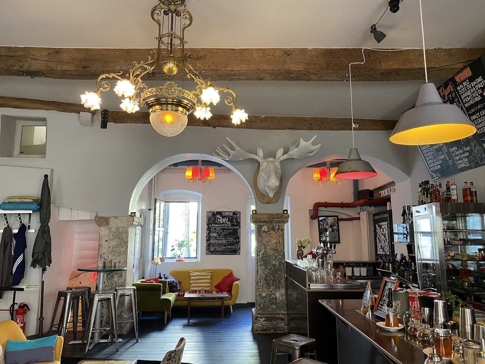
Konrad
Le salon bohème de la Ville-Haute.
Café bio et pâtisseries maison le jour ; concerts et club de comédie au sous-sol le soir. Une des premières maisons de café de spécialité de la ville — bois patiné, lumière chaude, objets chinés.
Un salon, pas un décor
On y entre pour un café, on y reste pour l'ambiance.Konrad, c'est le salon bohème de la Ville-Haute : meubles chinés d'avant 1980, canapés dépareillés, collections improbables, et une lumière chaude qui ne presse personne. Une des premières adresses de café de spécialité de Luxembourg, où l'on grignote une pâtisseuse maison entre deux rendez-vous — puis où l'on revient le soir pour la musique.
La tête d'élan
Blanche, au mur, qui veille sur la salle — l'emblème officieux de la maison.
Le lustre 1900
Laiton et pampilles au-dessus des arches en pierre — le Konrad n'a rien d'un café standard.
Le café de spécialité
Grains torréfiés avec soin, bio quand c'est possible, servis sans chichis.
La vitrine & le comptoir
Fait maison, changeant au fil des jours. Voici les incontournables.
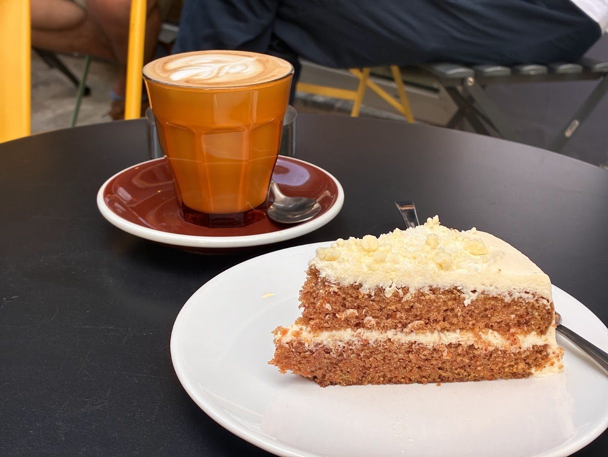
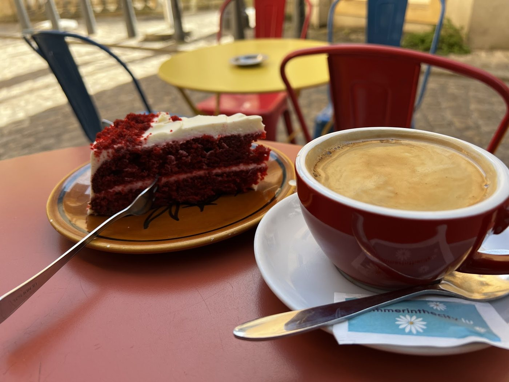
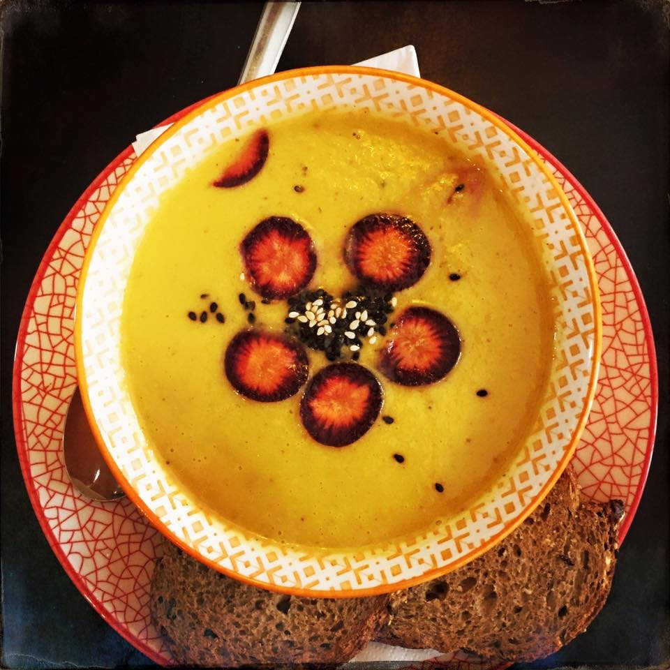
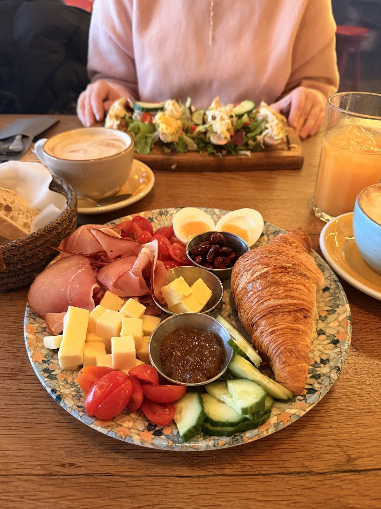
La cave prend le micro
Sous le café, une cave voûtée où le Konrad se transforme, le soir : musique live et rires. C'est ce qui fait de cette adresse bien plus qu'un café.
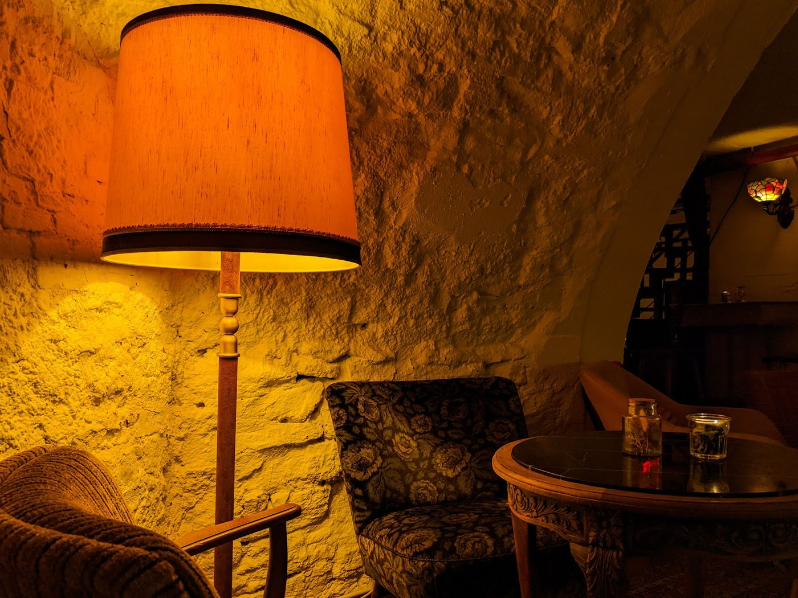
Concerts live
Des sets intimistes dans la cave — jazz, folk, découvertes.
Comedy club
Un rendez-vous mensuel de stand-up, en petit comité.
Open mic & DJ
La scène est à qui la prend — et la nuit s'étire.
Programmation indicative — dates et affiches à confirmer avec la maison (suivez @konrad.cafe).
Entrez, installez-vous
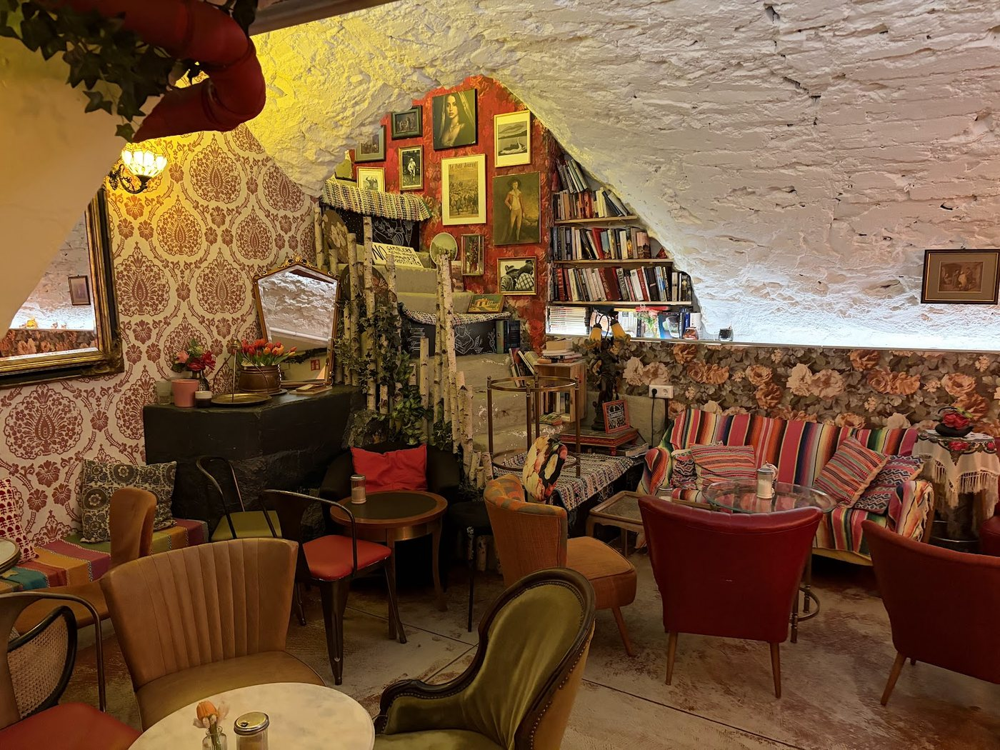
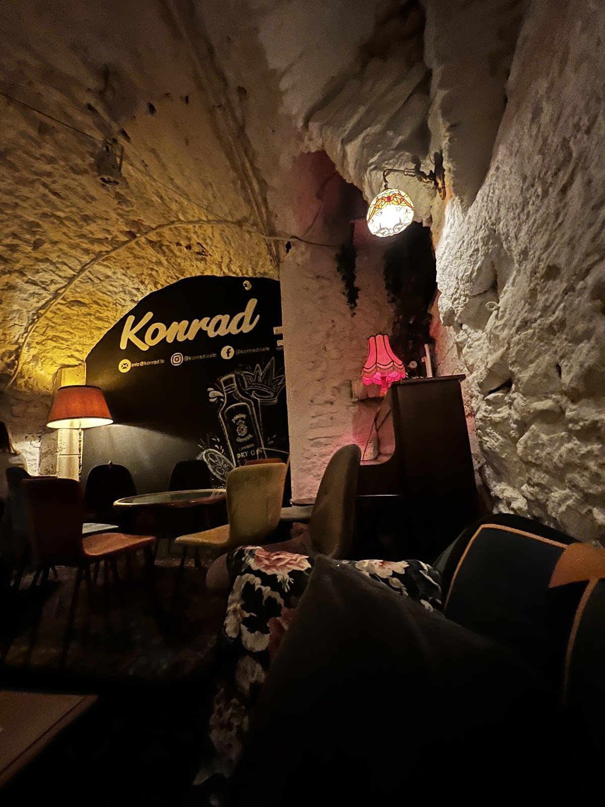
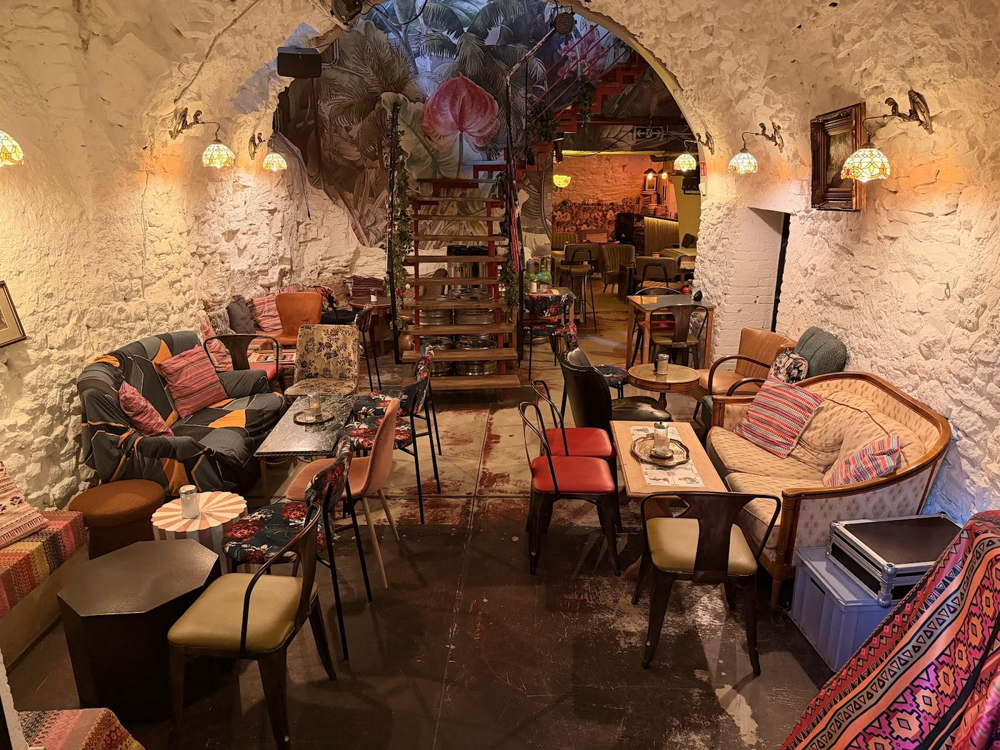
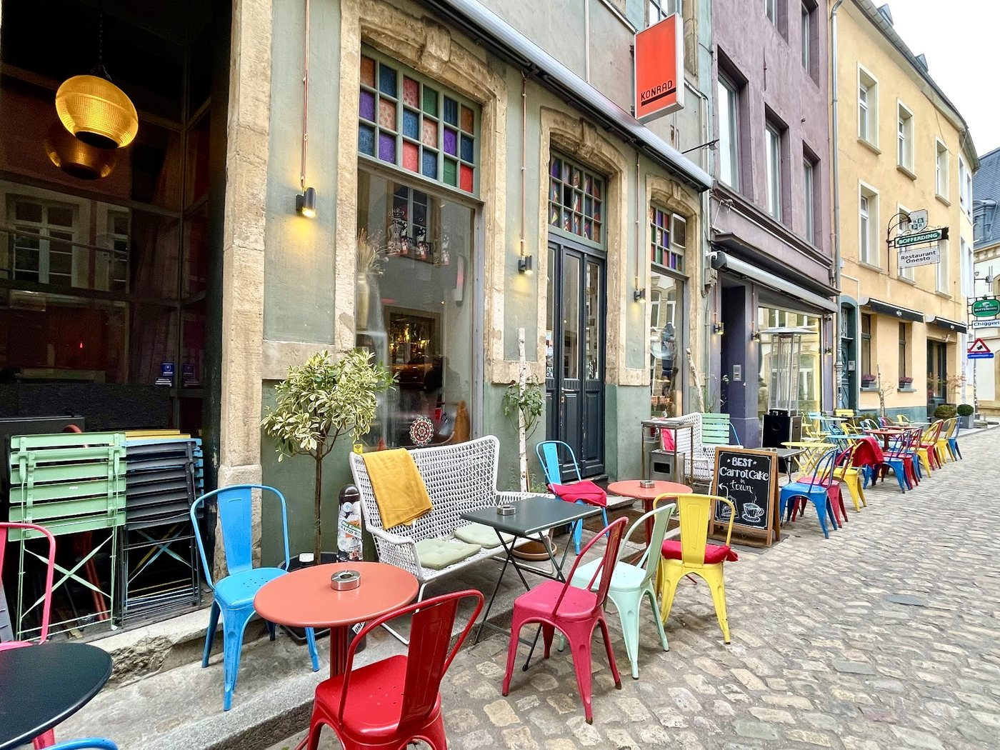
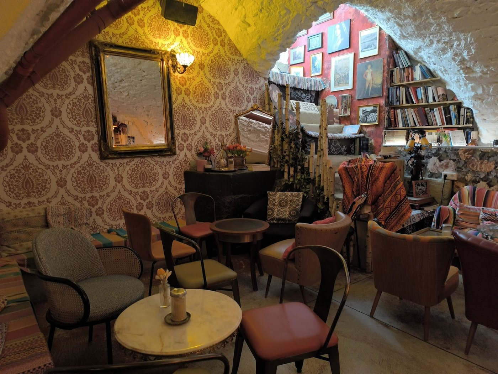
Photographies de sources publiques — à remplacer par les visuels de la maison.
Passer nous voir
🕑 Horaires
⚠ Horaires indicatifs — à confirmer avec la maison.